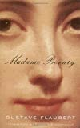
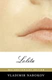
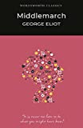
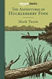
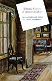

The Top 8: The Greatest Books of All Time
Anna Karenina
by Leo Tolstoy

Anna Karenina tells of the doomed love affair between the sensuous and rebellious Anna and the dashing officer, Count Vronsky. Tragedy unfolds as Anna rejects her passionless marriage and must endure the hypocrisies of society. Set against a vast and richly textured canvas of nineteenth-century Russia, the novel's seven major characters create a dynamic imbalance, playing out the contrasts of city and country life and all the variations on love and family happiness. While previous versions have softened the robust, and sometimes shocking, quality of Tolstoy's writing, Pevear and Volokhonsky have produced a translation true to his powerful voice. This award-winning team's authoritative edition also includes an illuminating introduction and explanatory notes. Beautiful, vigorous, and eminently readable, this Anna Karenina will be the definitive text for generations to come.
Madame Bovary by
Gustave Flaubert

For daring to peer into the heart of an adulteress and enumerate its contents with profound dispassion, the author of Madame Bovary was tried for "offenses against morality and religion." What shocks us today about Flaubert's devastatingly realized tale of a young woman destroyed by the reckless pursuit of her romantic dreams is its pure artistry: the poise of its narrative structure, the opulence of its prose (marvelously captured in the English translation of Francis Steegmuller), and its creation of a world whose minor figures are as vital as its doomed heroine. In reading Madame Bovary, one experiences a work that remains genuinely revolutionary almost a century and a half after its creation.
War and Peace by
Leo Tolstoy

Epic in scale, War and Peace delineates in graphic detail events leading up to Napoleon's invasion of Russia, and the impact of the Napoleonic era on Tsarist society, as seen through the eyes of five Russian aristocratic families.
The Great Gatsby
by F. Scott Fitzgerald

The novel chronicles an era that Fitzgerald himself dubbed the "Jazz Age". Following the shock and chaos of World War I, American society enjoyed unprecedented levels of prosperity during the "roaring" 1920s as the economy soared. At the same time, Prohibition, the ban on the sale and manufacture of alcohol as mandated by the Eighteenth Amendment, made millionaires out of bootleggers and led to an increase in organized crime, for example the Jewish mafia. Although Fitzgerald, like Nick Carraway in his novel, idolized the riches and glamor of the age, he was uncomfortable with the unrestrained materialism and the lack of morality that went with it, a kind of decadence.
Lolita
by Vladimir Nabokov

The book is internationally famous for its innovative style and infamous for its controversial subject: the protagonist and unreliable narrator, middle aged Humbert Humbert, becomes obsessed and sexually involved with a twelve-year-old girl named Dolores Haze.
Middlemarch
by George Eliot

Middlemarch: A Study of Provincial Life is a novel by George Eliot, the pen name of Mary Anne Evans, later Marian Evans. It is her seventh novel, begun in 1869 and then put aside during the final illness of Thornton Lewes, the son of her companion George Henry Lewes. During the following year Eliot resumed work, fusing together several stories into a coherent whole, and during 1871–72 the novel appeared in serial form. The first one-volume edition was published in 1874, and attracted large sales. Subtitled "A Study of Provincial Life", the novel is set in the fictitious Midlands town of Middlemarch during the period 1830–32. It has a multiple plot with a large cast of characters, and in addition to its distinct though interlocking narratives it pursues a number of underlying themes, including the status of women, the nature of marriage, idealism and self-interest, religion and hypocrisy, political reform, and education. The pace is leisurely, the tone is mildly didactic (with an authorial voice that occasionally bursts through the narrative), and the canvas is very broad.
The Adventures of Huckleberry Finn
by Mark Twain

Revered by all of the town's children and dreaded by all of its mothers, Huckleberry Finn is indisputably the most appealing child-hero in American literature. Unlike the tall-tale, idyllic world of Tom Sawyer, The Adventures of Huckleberry Finn is firmly grounded in early reality. From the abusive drunkard who serves as Huckleberry's father, to Huck's first tentative grappling with issues of personal liberty and the unknown, Huckleberry Finn endeavors to delve quite a bit deeper into the complexities — both joyful and tragic of life.
The Stories of Anton Chekhov
by Anton Chekhov

Anton Pavlovich Chekhov was a Russian short-story writer, playwright and physician, considered to be one of the greatest short-story writers in the history of world literature. His career as a dramatist produced four classics and his best short stories are held in high esteem by writers and critics. Chekhov practised as a doctor throughout most of his literary career: "Medicine is my lawful wife," he once said, "and literature is my mistress."